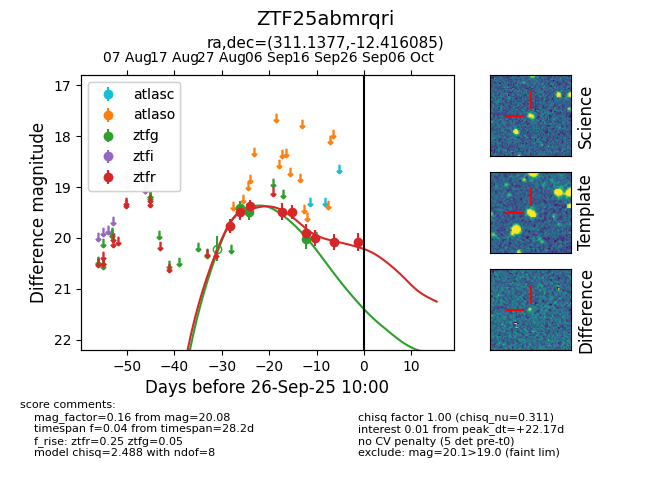
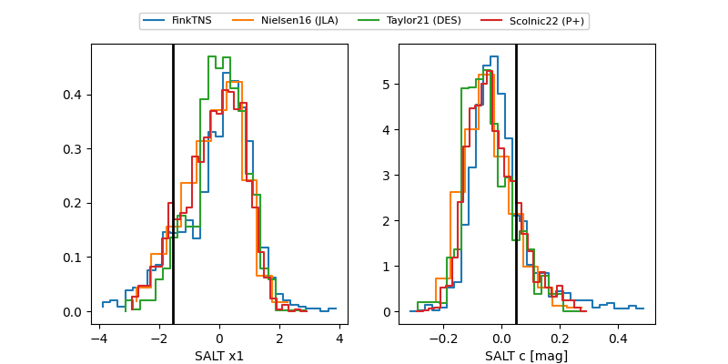

FINK: ZTF25abmrqri
Lasair: ZTF25abmrqri
ALeRCE: ZTF25abmrqri
ZTF25abmrqri (ztf,fink)
equatorial (ra, dec) = (311.1377,-12.41609)
galactic (l, b) = (34.2385,-30.65152)


last ztfg=20.03, ztfr=20.08
3 ztfg, 9 ztfr detections